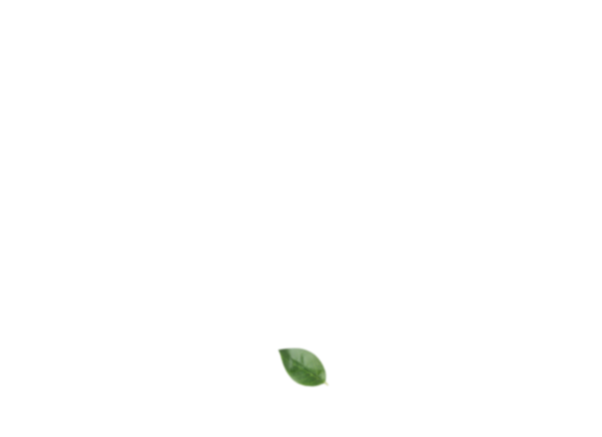

Suco de Laranja 100% natural,
o verdadeiro você só encontra na
orange
O melhor e mais saboroso suco da fruta, sinta o sabor recém tirado da árvore e espremido direto na garrafa, sem bagaços ou sementes. Saboreie e sinta o verdadeiro sabor da laranja.
